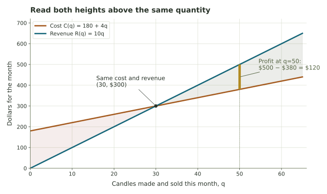

Exploring cost, revenue, and profit
Move the sliders to see how monthly costs, revenue, and profit fit together.
A candle business
Imagine a seller who pays $180 each month to rent a market stall, spends $4 on materials for each candle, and sells every candle for $10. Let q be the number of candles made and sold during the month.
The total cost combines a fixed expense, F, with a cost of v dollars per candle: C(q) = F + vq. The revenue is the price p times the number sold: R(q) = pq. Subtract cost from revenue to get profit: P(q) = R(q) − C(q) = (p − v)q − F.
Move the sliders to change the assumptions. The model treats the selling price and cost per candle as constant and assumes all candles produced are sold.
Cost, revenue, and profit
At 50 candles sold, the business earns $120.00 in profit.

The vertical gap between the lines at the selected quantity shows the profit or loss. Where the lines cross, profit is zero.